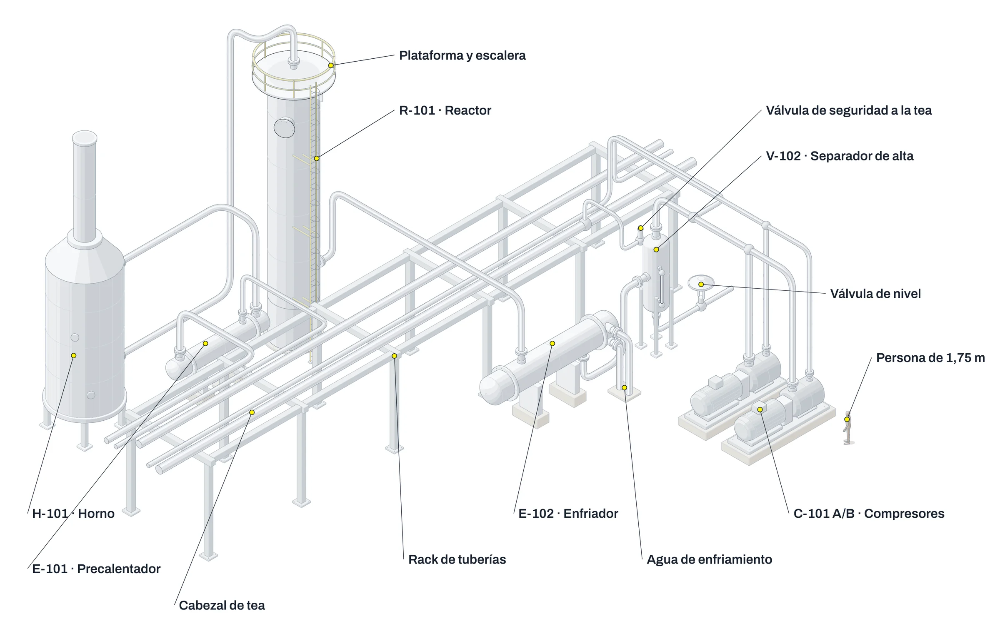

Proyecto de Operaciones Unitarias · Sesión 03
Diagramas de ingeniería
El diagrama de bloques y el diagrama de flujo de proceso de una planta, con sus códigos, sus corrientes, su tabla y sus servicios. El P&ID sigue en la presentación siguiente.
La sesión
Después del quiz, una hora para leer y dibujar los diagramas de una planta, con un solo caso en toda la sesión.
El jueves 4 de febrero es el Taller 1, en papel y en parejas, sobre un PFD con errores: lo que vea hoy es lo que necesita para leerlo.
Planta y plano

Así ve la planta quien la recorre: un horno, un reactor, un rack de tuberías, un separador y dos compresores. Desde el piso nadie sabe qué entra a cuál, a qué temperatura ni en qué orden; en el plano, sí.
Por eso la ingeniería química dibuja. Quien diseña, quien construye y quien opera leen el mismo dibujo, y con sustancias inflamables o tóxicas a presión un malentendido entre ellos termina en un accidente.
El plano acompaña a la planta toda su vida: se dibuja antes de construirla, se usa para operarla y mantenerla, y se pone al día cada vez que algo cambia. La ISO 10628 fija los diagramas y los símbolos de los equipos, y la ANSI/ISA-5.1, los de los instrumentos.
Tres diagramas
¿Qué hace el proceso?
- Cajas con el nombre de cada operación, unidas por flechas
- Lo lee la gerencia, o quien compara alternativas
- Etapa de concepto y viabilidad
- En la planta de benceno: tres bloques
¿Con qué equipos y en qué condiciones?
- Cada equipo con su código y cada corriente con su número
- Lo leen los ingenieros de proceso: lleva el balance de materia y energía
- Etapa de diseño de proceso
- En la planta de benceno: quince equipos y 23 corrientes
¿Cómo se construye y se opera?
- Cada tubería, cada válvula y cada instrumento
- Lo leen la ingeniería de detalle, la construcción, la operación y la seguridad
- Etapa de detalle, construcción y operación
- En el libro: una sección, el separador V-102
Una prueba rápida: si el dibujo no muestra todos los equipos, es un diagrama de bloques. El entregable de su proyecto es el PFD completo de su planta; el diagrama de bloques es su borrador y el P&ID se practica en el Taller 1.
La planta de benceno
Benceno por hidrodesalquilación de tolueno, un caso clásico del diseño de procesos. Es la planta del capítulo 2, de la guía de la semana 2 y del Quiz 1, y sus números son los mismos en los tres diagramas.
El tolueno y el hidrógeno reaccionan en R-101, un lecho fijo adiabático a 600 °C y 25 bar. En cada paso reacciona el 75 % del tolueno, y el efluente sale a 668 °C.
Lo que no reacciona vuelve: el hidrógeno con el gas de reciclo y el tolueno desde el fondo de la columna. Una purga saca el metano que se forma, que de otro modo se acumularía en el reciclo.
El diagrama de bloques
La planta entera en una hoja: sus entradas, sus salidas y sus reciclos.
Diagrama de bloques de la planta de benceno
El libro lo abrevia BFD, del inglés block flow diagram; el Taller 1 y la guía del reto lo llaman PBD. Es el mismo diagrama.
Construcción del diagrama de bloques
El borrador se arma primero a mano, en papel o en el tablero, y después pasa a una herramienta de dibujo.
Errores comunes en el diagrama de bloques
El diagrama de flujo de proceso
El documento de trabajo del ingeniero de proceso: cada equipo con su código, cada corriente con su número y su fila en la tabla.
Tres bloques, quince equipos
Cada bloque se abre en sus equipos: Reacción en cinco, Separación en cuatro y Destilación en seis. Las flechas que unían los bloques se vuelven corrientes numeradas, y cada equipo recibe su código.
Lo que entra a la planta y lo que sale de ella no cambia al abrir los bloques: el PFD tiene el mismo balance global del diagrama de bloques, 13 255 kg/h.
Los dos reciclos, que en el diagrama de bloques eran dos flechas de vuelta, son ahora corrientes con su propio número: el gas, la 5; el tolueno, la 22.
PFD de la planta de benceno
Del bloque a los equipos
Reacción
- V-101tambor de alimentación
- P-101 A/Bbombas de alimentación
- E-101precalentador, con HPS
- H-101horno, a 600 °C
- R-101reactor de lecho fijo
Separación
- E-102enfriador del efluente, con CW
- V-102separador de alta, 23,9 bar
- C-101 A/Bcompresor de reciclo
- V-103separador de baja, 2,8 bar
Destilación
- E-103calentador del alimento, con LPS
- T-101columna de benceno, 2,5 bar
- E-104condensador, con CW
- V-104tambor de reflujo
- P-102 A/Bbombas de reflujo
- E-105rehervidor, con MPS
Donde el diagrama de bloques dice «Reacción», el PFD muestra cinco equipos. Y agrega lo que el de bloques calla: el código de cada equipo, el número de cada corriente con su tabla, el servicio de cada intercambiador y los lazos de control básicos.
Símbolos de los equipos
La norma ordena sus símbolos en 29 grupos. Estos son los que más aparecen en un PFD, todos a la misma escala, con el numeral de la norma y la letra del código.
Recipiente verticalISO 10628-2, 1.5 · V
Recipiente horizontalISO 10628-2, 1.5 · V
Tanque de techo cónicoISO 10628-2, 1.3 · TK
Columna de platosISO 10628-2, 2.2 · T
Lecho fijo (reactor)ISO 10628-2, 2.4 · R
Intercambiador, generalISO 10628-2, 3.1 · E
Tubos y corazaISO 10628-2, 3.3 · E
RehervidorISO 10628-2, 3.12 · E
HornoISO 10628-2, 4.3, 4.4 y 4.7 · H
Bomba centrífugaISO 10628-2, 15.2 · P
Compresor centrífugoISO 10628-2, 16.2 · C
Motor eléctricoISO 10628-2, 20.6
Cada empresa y cada herramienta de dibujo trae su biblioteca, así que un plano se lee empezando por su leyenda. Y el rombo sobre una línea no es un equipo ni una válvula: es el número de la corriente.
Tres códigos
Un código de equipo se arma como XX-YZZ A/B: letra de clase, dígito de área, consecutivo y, si hay varias unidades, sus letras. Toda la planta de benceno está en el área 100: E-101 es el intercambiador número uno de esa área, y E-105, el número cinco.
P-101 A/B indica dos bombas idénticas: mientras una trabaja, la otra espera de reserva. En el PFD aparece una sola y el código avisa que son dos; en el P&ID se dibujan ambas.
Con la misma lógica se arman las etiquetas de los instrumentos y los códigos de las líneas, que se estudian con el P&ID.
Letras de clase
Un código acompaña al equipo toda su vida. Si se cambia por uno idéntico, el nuevo conserva el código, a veces con una letra al final (H-101A). Si el cambio es de concepto, el código se retira: cambiar E-102 por una caldera y un condensador daría E-106 y E-107, y nadie volvería a usar E-102.
Muchas empresas tienen su convención, como K para los compresores: su plano declara la suya en la leyenda.
Corrientes
- Cada corriente tiene un número propio, escrito en un rombo sobre su línea; las flechas indican hacia dónde va.
- La numeración sigue el flujo y empieza en el tolueno fresco (1). El hidrógeno de repuesto entra más adelante y por eso es la 4.
- Entre dos equipos va siempre una corriente distinta, porque al pasar por cada uno cambia la temperatura, la presión, la fase o la composición: 6 → E-101 → 7 → H-101 → 8 → R-101 → 9.
- También nacen corrientes donde dos se juntan o una se reparte: la 3, la 4 y la 5 se suman en la 6, y el gas que sale de V-102 se parte en la 11 y la purga, la 12.
- Los servicios no llevan número: aparecen en el plano con su código.
Tabla de corrientes
En el dibujo va solo el número de la corriente; sus datos se leen en la tabla, al pie del plano o en un anexo.
| Flujo de cada componente (kmol/h) | ||||||||||
|---|---|---|---|---|---|---|---|---|---|---|
| N.º | Corriente | T (°C) | p (bar) | Fracción de vapor | (kg/h) | (kmol/h) | H₂ | CH₄ | Benceno | Tolueno |
| 3 | Descarga de P-101 | 59,9 | 25,80 | líquido | 16 173 | 175,6 | 0 | 0 | 0,64 | 175,0 |
| 4 | Hidrógeno de repuesto | 25,0 | 25,50 | vapor | 1027 | 378,0 | 359,1 | 18,9 | 0 | 0 |
| 5 | Gas de reciclo | 47,0 | 25,50 | vapor | 7266 | 868,3 | 521,0 | 337,2 | 9,12 | 1,03 |
| 6 | Alimento a E-101 | 48,9 | 25,50 | 0,87 | 24 467 | 1421,9 | 880,1 | 356,1 | 9,76 | 176,0 |
| 8 | Entrada al reactor | 600,0 | 25,00 | vapor | 24 467 | 1421,9 | 880,1 | 356,1 | 9,76 | 176,0 |
| 9 | Efluente del reactor | 667,9 | 24,40 | vapor | 24 467 | 1421,9 | 748,1 | 488,1 | 141,8 | 44,0 |
| 11 | Gas a C-101 | 40,0 | 23,90 | vapor | 7266 | 868,3 | 521,0 | 337,2 | 9,12 | 1,03 |
| 12 | Purga | 40,0 | 23,90 | vapor | 3148 | 376,2 | 225,7 | 146,1 | 3,95 | 0,45 |
| 21 | Benceno producto | 40,2 | 4,50 | líquido | 10 000 | 128,6 | 0,02 | 0,72 | 127,6 | 0,21 |
| 22 | Tolueno de reciclo | 150,2 | 2,80 | líquido | 3945 | 42,9 | 0 | 0 | 0,64 | 42,3 |
Diez de las 23 corrientes de la tabla del capítulo 2, una por fila; en el plano va una por columna. Presión absoluta, y tres o cuatro cifras significativas.
Tres comprobaciones
Los componentes suman el total
En la corriente 21:
kmol/h, que es 128,6 salvo por el redondeo.
El peso molecular tiene sentido
En la corriente 22, casi todo tolueno:
En la 4, 1027/378,0 = 2,72: algo más que el hidrógeno, porque trae 5 % de metano.
Los equipos hacen lo que dicen
En una mezcla, los flujos se suman: el H₂ de la 6 es
En un intercambiador no cambian (6 = 7 = 8). En el reactor el tolueno baja 176,0 − 44,0 = 132,0 kmol/h, y el hidrógeno lo mismo. Al dividir una corriente, las ramas conservan la composición y solo cambia el flujo: tanto la 11 como la 12 llevan 60 % de H₂.
La tabla no deja casillas en blanco ni omite corrientes, aunque una sea la suma de otras dos. Un flujo despreciable se escribe «traza»: quien lea el plano seis meses después toma una casilla vacía por un cero o por un dato que se olvidó.
Balance de masa
En estado estacionario no hay acumulación, y la reacción reordena los átomos sin crear ni destruir masa. Por eso, en cada bloque y en la planta completa, la masa que entra es la que sale.
En un balance de diseño los números los fija usted: no hay medidores con error, y lo único que separa la entrada de la salida es el redondeo. Por eso su PFD cierra a ±1 %, o mejor. Una hoja de Excel con fórmulas vinculadas lo verifica sola cada vez que algo cambia.
La planta de benceno
En una hidrodesulfuración, , la suma es −1: la masa cierra y los moles no.
Servicios
La temperatura decide el servicio: el vapor debe condensar unos 10 °C por encima de la temperatura final de la corriente. La planta de benceno usa cinco servicios.
E-101, a 225 °C
Con vapor de media (184 a 201 °C) no se llega; con el de alta (252 a 265 °C), sí.
H-101, a 600 °C
Ningún vapor de servicio llega ahí: hace falta fuego. El horno quema gas combustible.
E-103, a 100 °C
Basta el vapor de baja, que condensa por encima de 144 °C.
E-105, a 150 °C
Al de baja (144 a 159 °C) le faltan los 10 °C de acercamiento; al de media, no.
E-102 y E-104, a 40 °C
El agua de enfriamiento llega a 30 °C: justo los 10 °C. Más abajo haría falta agua refrigerada.
El vapor entra por arriba del intercambiador y el condensado, rotulado COND, sale por abajo: si se acumulara, inundaría el área de transferencia. Se dibuja la conexión de cada equipo, no el cabezal, y la electricidad de los motores no se dibuja. Los códigos van en mayúscula.
Lazos de control y alivios
Un lazo mide una variable, decide y mueve un flujo, casi siempre con una válvula. Para leerlo hay que saber qué flujo se mueve para controlar qué variable. El PFD de la planta de benceno tiene doce.
- En V-102, como en cualquier recipiente, la salida de gas fija la presión y la de líquido, el nivel: PC-105 actúa sobre la purga y LC-106 sobre el líquido.
- La válvula de FC-102 se pone en la descarga de P-101. En la succión le quitaría presión al líquido que llega a la bomba.
- FFC-103 fija la razón del hidrógeno de repuesto al tolueno, y TC-104 la salida del horno con el gas combustible.
El PC trabaja todo el tiempo; la válvula de seguridad no controla nada y abre solo cuando el control falla. Por eso V-102 lleva las dos, y la PSV aparece en el P&ID.
Plantas por lotes
Una planta por lotes se dibuja con las mismas reglas y tres cambios: el balance se escribe en kilogramos por lote, los diagramas se acompañan de un horario (el diagrama de Gantt) y un tanque intermedio conecta la parte por lotes con la continua.
En el proceso de la animación, un principio activo farmacéutico, un lote toma 14,5 h. Con los pasos traslapados al máximo, ocho lotes toman 7 × 4 + 14,5 = 42,5 h, contra 116 h uno tras otro: el secador, el paso más largo, fija cada cuánto sale un lote.
Una línea que lleva flujo solo en algunos pasos se rotula NNF, normalmente sin flujo. La rectificación de su aceite es por lotes al vacío, y la Bitácora 4 lo necesita.
Reglas del dibujo
- 1La hojaDe preferencia A1, con su cuadro de rótulo; también la D, de 24 × 36 pulgadas, y varias hojas conectadas para un proceso grande.
- 2La disposiciónLo que va arriba en la planta se dibuja arriba. El flujo principal avanza hacia la derecha y los reciclos vuelven hacia la izquierda; los gases salen arriba y los líquidos abajo.
- 3Los grosoresFlujos principales, 1,0 mm; equipos, flujos secundarios y servicios, 0,5 mm; válvulas, instrumentos y señales, 0,25 mm.
- 4Los crucesCuando dos líneas se cruzan sin unirse, se corta la vertical si son del mismo grosor, y la más delgada si no lo son.
- 5Los rótulosEn mayúscula, salvo las fórmulas químicas. El código del equipo, de 5 mm, va junto al símbolo y no adentro; lo demás, de 2,5 mm.
- 6La escalaEl PFD no va a escala, pero los equipos principales conservan sus proporciones: una bomba no es del tamaño de un tanque.
Software para el PFD
- Microsoft Visio, con bibliotecas de equipos, tuberías e instrumentos que se arrastran y se sueltan.
- AutoCAD Plant 3D, con precisión dimensional, si el PFD va a crecer hasta el P&ID y el modelo en 3D.
- AVEVA P&ID, integrado al modelado en 3D, con una curva de aprendizaje empinada.
- draw.io, gratuito, con su biblioteca de símbolos de proceso.
- PowerPoint no está hecho para diagramas técnicos: no lo use para el PFD.
- Dos horas aprendiendo los atajos de la herramienta ahorran veinte en el semestre.
- Versiones con fecha: PFD_v1_2027-02-14, no «PFD_final_final_ahora_sí».
- Se entrega en PDF vectorial, nunca en un JPG pixelado.
Un plano que cambia
Revisiones
Un plano pasa por varias rondas de dibujo, revisión y corrección antes de construir. Cada cambio queda en su cuadro de rótulo (ISO 7200), con quién dibujó, revisó y aprobó, la fecha y el número de revisión.
Planos al día
En Estados Unidos, la norma OSHA 29 CFR 1910.119 pide el PFD y los P&ID al día y revalidar el análisis de riesgos al menos cada cinco años. En Colombia, el Decreto 1347 de 2021 pide lo mismo a las instalaciones con sustancias peligrosas. En Flixborough, un cambio hecho sin esa revisión costó 28 vidas.
Todo el semestre
Su PFD es la referencia del proyecto y crece con cada bitácora: el tamaño de los equipos, las condiciones que salen de sus balances, los lazos de control y lo que cambie con la simulación. Un PFD desactualizado es peor que no tener PFD.
Errores frecuentes en el PFD
Lista de revisión del PFD
- Un equipo se llama igual en el plano, en la tabla de equipos y en el texto.
- Las corrientes de proceso llevan su número en un rombo, uno distinto por cada tramo entre equipos.
- En la tabla de corrientes están la temperatura, la presión, la fracción de vapor, los flujos másico y molar y el de cada componente, sin casillas vacías.
- El servicio de cada intercambiador aparece con su código, por dónde entra y por dónde sale, y en el sentido correcto.
- Los lazos básicos están dibujados, y en las bombas centrífugas la válvula va en la descarga.
- El balance global cierra en masa.
- Los supuestos escritos: la conversión, las separaciones y lo que se simplificó a propósito.
- Las fuentes de los datos y de las correlaciones, citadas.
- El cuadro de rótulo con el nombre, la fecha y la versión, como en un plano real.
- Una revisión cruzada con otro equipo antes de entregar.
- Un solo estilo de letra y de tamaño en todo el plano.
El PFD de su planta
Lo mismo que vio en la planta de benceno, ahora con la cáscara de cítricos y el aceite esencial.
El PFD en las bitácoras
El borrador
La materia prima, el diagrama de bloques de su planta y los sólidos: lavado y desgarrado.
El PFD completo
Con las bombas, las válvulas, los lazos de control y el tanque de lavado.
El calor y la separación
El arrastre, el condensador con incondensables, el florentino, la winterización y los servicios.
La rectificación
La columna por lotes al vacío, su horario y el costo de la planta.
El póster
La planta entera, con su PFD al centro y cada número sostenido.
Cada bitácora le agrega al PFD lo que calculó: el tamaño de cada equipo, sus condiciones y sus servicios. El diagrama de su proyecto es uno solo, y es el mismo en las cuatro bitácoras y en el póster.
Taller 1
Un PFD con errores, en papel y en parejas que asigna el profesor. Cada pareja recibe su propio plano de una planta de ron a partir de melaza.
El plano y la hoja de consulta
Solo eso: el plano de su pareja y la hoja de consulta con las reglas del capítulo 2. En el Material hay un plano de práctica.
Leer, corregir y dibujar
El diagrama de bloques de la planta, el azúcar seguida hasta el etanol, los errores de dibujo y de ingeniería con su corrección, la columna y el fermentador dibujado como en un P&ID.
El boleto de salida
Al final, cada uno responde en papel unas preguntas sobre el plano. Vale la mitad de la nota del taller.
IQYA-2031 · Sesión 03
Próxima sesión
Nos vemos el jueves 4 de febrero en el Taller 1. Antes, repase la sección 2.4 del libro y abra el plano de práctica: el jueves solo tendrá el plano y la hoja de consulta.
Figuras: capítulo 2 del libro de operaciones unitarias del curso. Grabados, vía Wikimedia Commons: «Citrus, Citronier» y «Citrus aurantium», New York Public Library, dominio público; «Un boticario y un alambique primitivo» y «Rama de cítrico con dos frutos», Wellcome Collection, CC BY 4.0; «Citrus madurensis», Francisco Manuel Blanco, dominio público.